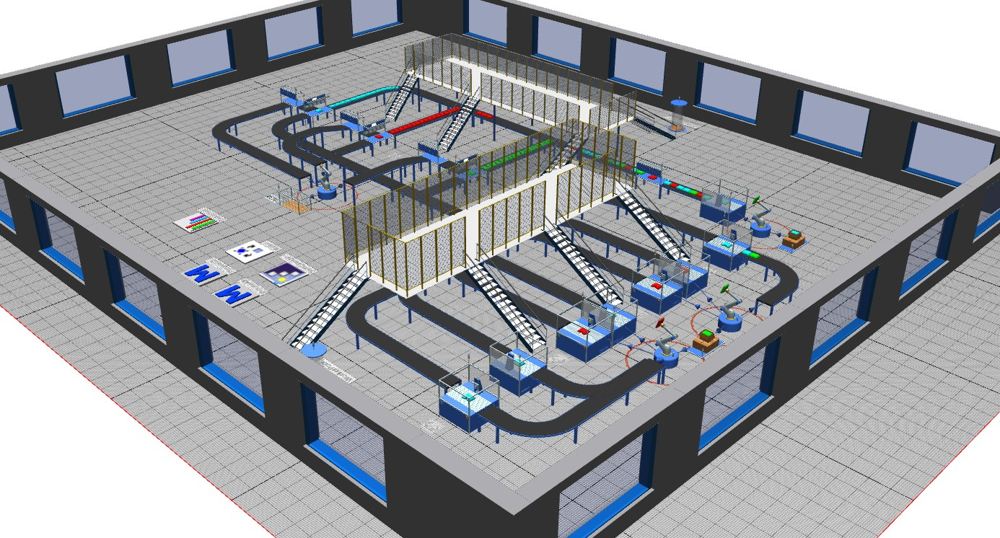
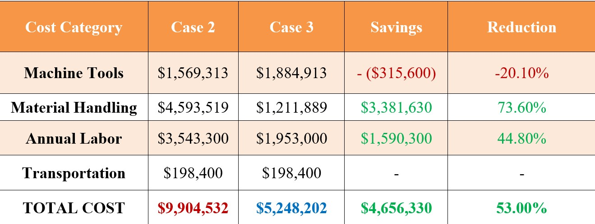

CHALLENGE
Design a machining and assembly line for 6-, 8-, and 9-speed transmission variants to meet an annual demand of 70,000 units. The final configuration had to achieve this within two shifts per day, five days per week, while addressing machining bottlenecks, excessive waiting, and resource costs.
APPROACH
- Case 1 — Ideal plant layout: Established a baseline with fixed cycle times, inline buffering, and no machine failures or worker breaks. Compared machine configurations to identify bottlenecks and combined Processes A and B to address idle time and uneven resource utilization.
- Case 2 — Typical three-shift layout: Expanded to six parallel A/B machining stations and incorporated machine failures, repair times, cycle-time variability, conveyor transport, and scheduled worker breaks. Established throughput and cost benchmarks under more realistic manufacturing conditions.
- Case 3 — Optimized two-shift layout: Increased A/B machining capacity to seven stations and selected equipment with a lower modeled failure rate — 6% instead of 15%. Revised shift schedules, eliminated dedicated buffer storage, and expanded variant-specific assembly paths to meet demand with fewer operating hours.
- Improved bottleneck capacity: Increased combined bell-housing machining capacity from six to seven parallel machines and selected equipment with a lower modeled failure rate — 6% instead of 15% — to support production with fewer operating hours.
- Implemented variant-specific routing: Added conveyor converters using part processing-time attributes to route matching bell and bearing housings to dedicated assembly stations. This addressed incorrect pairing between the three transmission variants in the initial model.
- Refined resource allocation and cost trade-offs: Used Excel to compare equipment, labor, and material-handling costs, alongside analysis of waiting costs. Evaluated additional machinery against maintaining a third shift and incorporated designated footpaths and staircases for worker access around conveyors and robotic handling areas.
OUTCOME / RESULTS
- Annual production demand: Achieved 73,434 units in the final simulation, exceeding the target by 4.9%. Reduced excess production from 13,837 to 3,434 units annually compared with the three-shift baseline.
- Reduced operating hours: Transitioned from three shifts to two, reducing net operating time from 22.5 to 15 hours per day while maintaining the required annual output.
- Lowered reported waiting: Reduced the simulation's reported waiting percentage from 62.84% to 43.96%, an 18.88-percentage-point reduction.
- Reduced resource requirements: Decreased planned staffing from 36 to 30 workers and eliminated the dedicated vertical buffer-storage system from the proposed layout.

